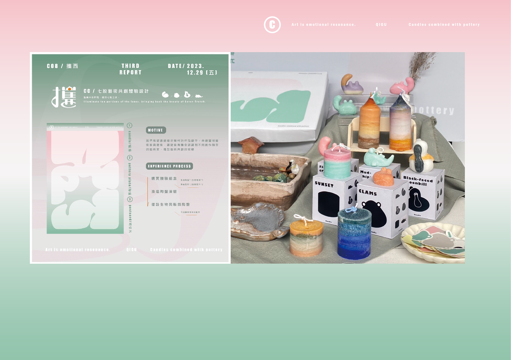
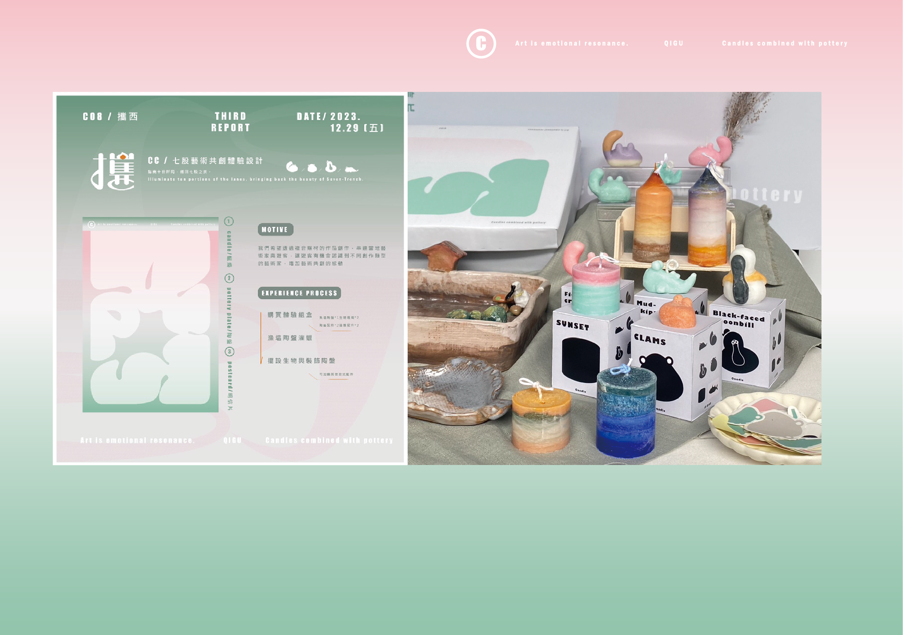
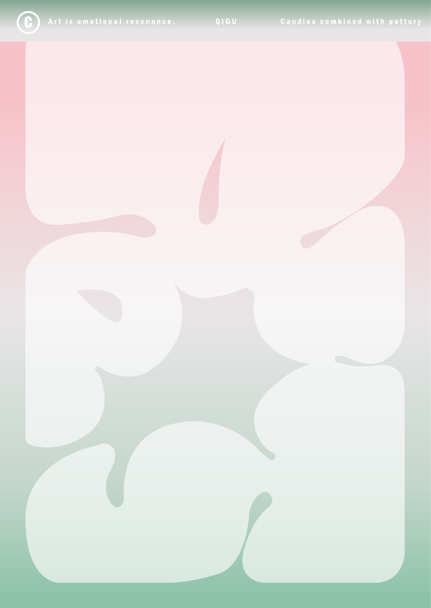
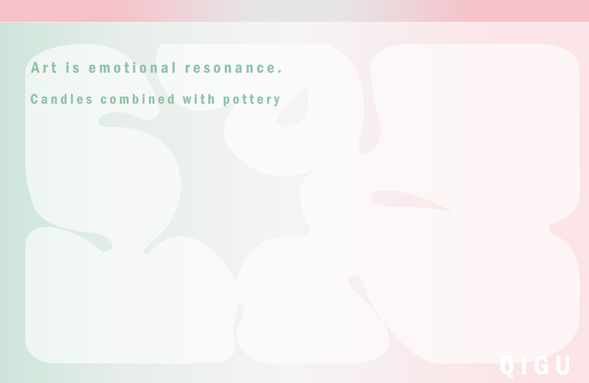
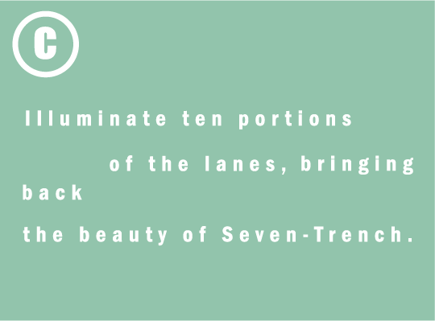
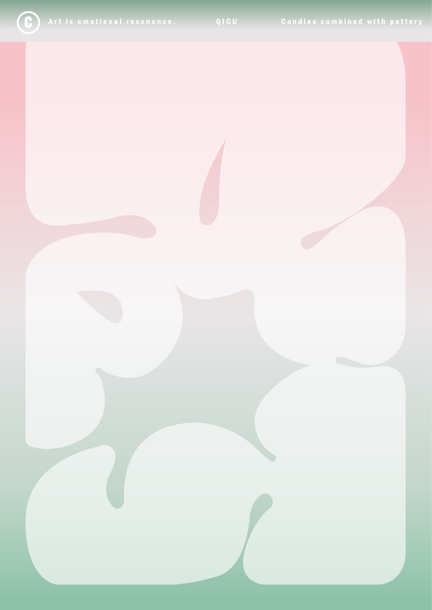
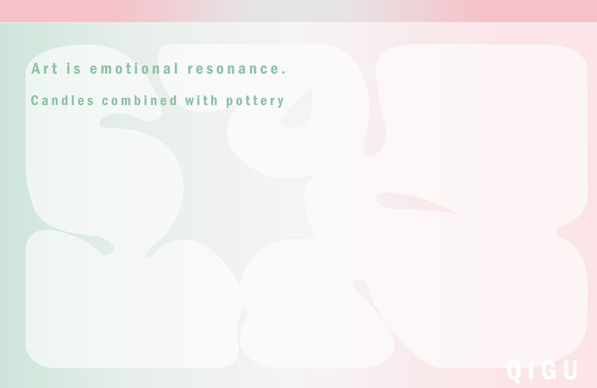
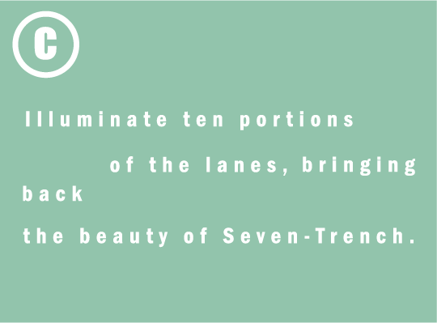

攜西
點亮十份阡陌，攜回七股之美
透過複合媒材的作品創作，我們將點亮十份阡陌，攜回七股之美。這個企劃不僅串連了當地藝術家與遊客，更讓遊客有機會透過藝術共創，認識不同創作類型的藝術家，從而增加藝術創作的感動。
我們希望改變人們對藝術村的印象，不僅僅是拍照打卡，而是能夠有更深度的體驗。透過這個企劃，我們讓遊客與藝術家相識，甚至共同創作，以留下彼此更深刻的感受，同時在七股享受創作的樂趣。
Lighting up the ten lanes, bringing back the beauty of Qigu.
Through the creation of works with composite materials, connecting local artists with tourists, and allowing tourists the opportunity to co-create through art, we aim to introduce them to different types of artists and evoke emotions through artistic creation.
The impression of an art village should not be limited to taking photos and checking in; there should be a deeper level of experience. Through this project, we hope to introduce tourists to artists and even engage in co-creation, leaving each other with deeper impressions and experiencing the joy of creation in Qigu.
 
 
